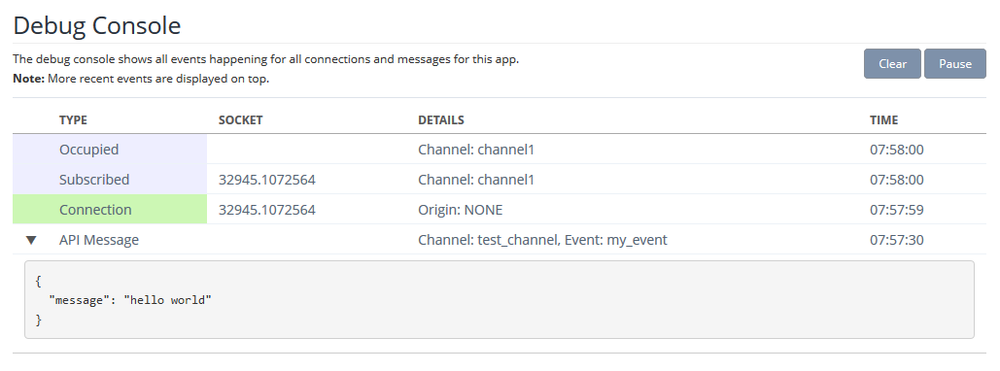
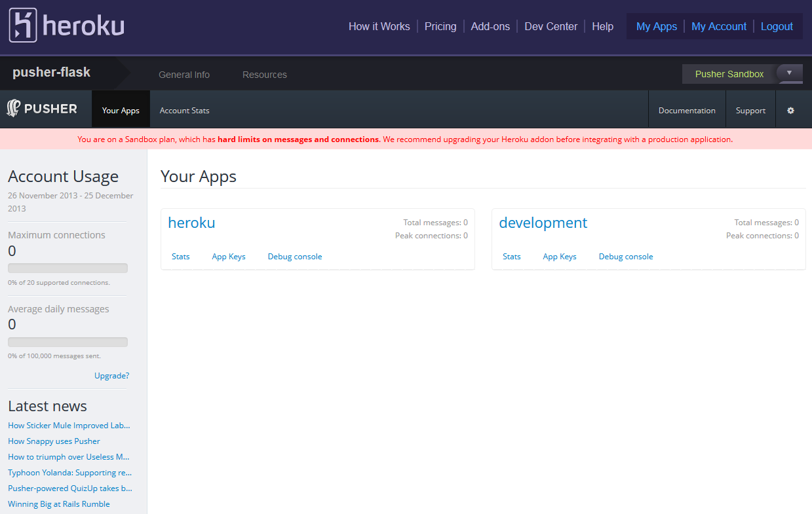

UbuntuでUnityを使えるようになるまで with Wine
{kind=link}
UbuntuでUnity(ゲームのほう)を動かすのに嵌ったのでメモ(主にWineで)
Wineで嵌りどころが多いのは今日に始まったことではないので、めげずに頑張りました。
バージョン情報
- Ubuntu 13.10 (Desktop)
- Unity 4.3.4
嵌まりポイントと共にインストール手順を。
新しいWineを使う
apt-get install wineで入るwineではdotnet20のインストールの時点でコケます。
Ubuntu13.10のapt-get install wineで入るwineは1.4(たしか)。
新しいUnity(4.3とか)を入れたい場合はwine1.7が必要。( wine - Can’t install dotnet - Ask Ubuntu )
wine - Can’t install dotnet - Ask Ubuntu
上記のURLにしたがって1.7をインストール。
$ sudo apt-get remove wine
$ sudo add-apt-repository ppa:ubuntu-wine/ppa
$ sudo apt-get update && sudo apt-get install wine1.7
Unityは32bit版で使う
シェルの設定ファイル(bashrc, zshrcなど)に32bit設定の変数を書いておく。
// WINEPREFIXは任意パス(自分はwine32にしている)
export WINEPREFIX=$HOME/wine32
export WINEARCH=win32
その後、winecfgコマンドを使うと、コンフィグ画面表示前にWINEPREFIXの場所にもろもろのファイルが生成される。
Unityに必要なパッケージをwinetricksを使ってインストール
guiでやりたい場合は以下のコマンドで開くGUIからインストールする。
winetricks --gui
Wineの公式に必要なパッケージについて記載があるので参考にする。
winetricksでインストール。
$ winetricks tahoma
$ winetricks d3dx9
$ winetricks dotnet20
$ winetricks corefonts
($ winetricks dotnet40)
($ winetricks forcemono)
()はoptional。
Unity(Windows版)インストーラーをダウンロードしてインストール
ここからダウンロードしてwineでインストール。
$ cd <ダウンロード先>
$ wine Unity****.exe
インストールするとデスクトップにアイコンができる。
起動するとエラー

このエラーでググると、この動画( How to install Unity3D 4 on Linux - YouTube )を見て解決している人がいた。
なにやらレジストリに’ProductID’というファイル(?)があります。(初期状態では存在しない)
追加してみます。
- $ winetricks –gui
- ‘Select the default wineprefix’を選択
- ‘Run regedit’を選択
- 右側のツリーで’HKEY_LOCAL_MASHINE>Software>Microsoft>Windows NT>CurrentVersion’を選択
- ここで右クリック、メニューの’新規>文字列値’を選択
- 名前を’ProductID’に変更
そうするとUnityが起動するようになりました。
新規プロジェクトがパスが不正だとかで作れない
一番はじめに出てくる新規作成画面で作成しようとすると、’specified path is valid unity’とエラーが発生します。
何故かどうやっても作成できません。
以下のリンクのDiscussionでは、
Unity: Downloading and Installing | Unity Cookie
Note
Hi, I’ve installed unity in wine as I am a linux user. When I make a new project I make a folder for it but I get an error: Specified path is not valid(should be a name of an nonexisting or empty directory)
Is this wine being unreliable or is there something wrong with what I am doing?
> Hi there- that’s a good question, I may just have to try it myself. It would be great to have Unity usable in Linux!
> For now, I would try a few trial-and-error fixes…first create the directory, then the project, create the directory via the “new project” dialogue, etc. It probably just Wine being a little finicky.
>> sorry, I should clarify what I said, I get the error when I make the directory in the new project dialogue. When I make it outside of the dialogue box I can’t create the project. :(
諦めて、既存のプロジェクトをWindowsのUnityからコピーしてきて起動しましょう。
既存のプロジェクト起動
やっと起動しました。
その後の嵌まりポイントがあるのかは未だ知りませんがUbuntu-WineでもUnityいけるようです。
“ubuntu unity”でググったときは、UIのほうばかり出てきてgameのほうを探してるときはかなりウザいですね。
他のバージョンでは試してませんが、現在の最新バージョン(多分)での検証でした。
FlaskでPusherを使う
FlaskでPusher使ってみたのでメモ。

Contents
登録してApp作成
Pusher | HTML5 WebSocket Powered Realtime Messaging Service
Signup。
管理画面にログインできるようになるので、New appをクリックして新しいappを作成。
とりあえず使ってみる
前に必要なモジュールを入れる。
$ mkvirtualenv Pusher_Sample
$ pip install pusher flask
App Keysにコード例があるので参考にする。
手っ取り早く、以下のコードを実行するとApp Keysのページでalertするみたいなのでpythonインタプリタからコピペで実行してみます。
import pusher
p = pusher.Pusher(
app_id='<id>',
key='<key>',
secret='<secret key>'
)
p['test_channel'].trigger('my_event', {'message': 'hello world'})
hello worldが出てくるはずです。
Debug Consoleから詳しい様子を確認できます。
試しに作ってみたやつ
((((((((((っ･ω･)っ ﾌﾞ-ﾝをクリックすると、AjaxでPostして((((((((((っ･ωΣ[柱]ｶﾞｺｯ! をPusherに投げます。
Pusherになにか来たらevent1でalertするだけ。
静的なサイトにしか見えませんが、その後ろではただalertを出すためだけにPusherが働いています。
# -*- encoding: utf-8 -*-
from flask import Flask, render_template, redirect, url_for, request
import pusher
app = Flask(__name__)
app.config.from_pyfile("app.cfg")
p = pusher.Pusher(
app_id = app.config["ID"],
key = app.config["KEY"],
secret = app.config["SECRET"]
)
@app.route('/')
def index():
return render_template('index.html')
@app.route('/pusher', methods=["POST"])
def pusher():
if request.method == 'POST':
p['channel1'].trigger('event1', {'message': "((((((((((っ･ωΣ[柱]ｶﾞｺｯ!"})
return 'ok'
if __name__ == '__main__':
app.debug = True
app.run()
Javascriptはこんな感じ。
var pusher = new Pusher('<key>');
var channel = pusher.subscribe('channel1');
channel.bind('event1', function(data) {
alert(data.message);
});
$('#push').click( function(){
$.ajax({
type: "POST",
url: "{{ url_for('pusher') }}",
contentType: 'application/json',
success: function(data) {
console.log(data);
}
});
});
嵌ったこととか
Timestamp expired: Given timestamp (2013-06-17T15:39:38Z) not within 600s of server time (2013-06-17T17:09:21Z)
Pusherサーバと時間がずれているとダメみたい。
手元のサーバーの時間を合わせる。
$ sudo date MMddhhmmyyyy
もし合わなくて'sudo: timestamp too far in the future:'と言われたら
$ sudo -K
$ sudo date MMddhhmmyyyy
頑張って合わせたが、なんか日本の時間とはずいぶんずれたような気がしたがあまり気にしない。
おまけ - Herokuにデプロイ
手順。
1. Herokuの準備
適当なAppを追加して、Add-onにPusherのSandbox(無料版)を追加します。
gitのクローン先をコピペしてremoteに追加。
$ git remote add heroku git@heroku.com:<app name>
Pusher Add-onをクリックすると、Heroku in Pusherな管理画面が出てくる。
{kind=link}
herokuのほうを使う。
3. HerokuのPusherを使う準備
HerokuのPusherを使う場合、Pythonのコードを書き換える必要がある。
Pusherのprivate keyを晒すわけにはいかないので、Herokuの環境変数に持たせる。
その影響で、アプリのPusherのオブジェクトを生成している部分を書き換える必要がある。
- app.config.from_pyfile("app.cfg")
- p = pusher.Pusher(
- app_id = app.config["ID"],
- key = app.config["KEY"],
- secret = app.config["SECRET"]
- )
+ p = pusher.pusher_from_url()
※参考 : pusher/pusher_client_python
pusher_from_urlは引数なしだと環境変数PUSHER_URLを参照しているので、Herokuに環境変数PUSHER_URLを追加する。
$ heroku config:app PUSHER_URL="http://<key>:<private key>@api.pusherapp.com/apps/<id>" --app <your app name>
URLはHeroku-Pusher管理画面のApp keysのRubyのexampleにあった。
C言語プロジェクトテンプレート作ってみた for Linux
仕事でC言語のプロジェクトを1-2monthでくるくる回していて、なんだかいろいろ便利したかったのでプロジェクトテンプレート作ってみた。
目的
- ノンストレスTDD
- ビルドを簡単にする(Python使う)
- メモリリーク検出(mtrace使用)
- プロジェクト開始時の設定を最小限にする
- たくさんあるプロジェクトの管理(同じ構成だと管理が便利)
- リリースに必要なファイル以外はtest/以下にあるのでごちゃごちゃしない
※ただし、これは 自分 の便利のために作られています。
※あくまで俺俺仕様です。
どんなプロジェクトに適用するの
自分のプロジェクトはライブラリになるソースを作成する作業。
実際にやることは、とある構造体とそれに関係する関数を実装するというものなので、プロジェクトの最終生成物は以下のようになる。
ProjectName/
Module1.h
Module1.c
Module2.h
Module2.c
Util.h
Util.c
これらのモジュールは主に何かしらの計算をしてくれる機能をもっている。
１つ１つのプロジェクトはそんなに大きくない(4~10ファイル程度)。
リリースのサイクルは以下。
- 仕様書・関数仕様Get
- 設計
- 実装
- 単体テスト
- 結合テスト(希望する計算結果との比較)
ということで、単体テストと結合テストのビルドがさくさくと出来るのがいい。
使い方
- yymm/C_Proj_Template のsrcフォルダをローカルに配置して名前を今から作るプロジェクト名に変えます。
- そのフォルダに必要なモジュールファイル(*.h, *.c)を作成します。
- Makefileに作成したモジュールをOBJSに書き込みます(../モジュール名.o)
- test/test.cにテストを書き込みます。(void Test_関数名(CuTest* tc))
- test/jointest.cにmain関数の中に結合テストのコードを書く。
- ./build.py unittestで単体テスト
- ./build.py or ./build.py jointestで結合テスト
Note
必要に応じてMakefile内のLDLIBSやINCLUDEDに必要なものを追加する。
UnitTestフレームワーク : CuTestの使い方
CuTest.hとCuTest.cからなるとても軽量なフレームワークです。ライセンスは`The zlib/libpng License (Zlib) | Open Source Initiative <http://opensource.org/licenses/zlib-license.html>`_ 。
使い方は以下。
- 適当なファイルにテストケース(Testで始まる)を書く。
- 同封のmake-tests.shを実行する。
- 生成されたソースコードとともにビルドする。
同封のShell Scriptはテストケースからmain関数を含むソースコードを生成しているだけなので、その他のスクリプト言語でも書ける。
このプロジェクトテンプレートでは、Pythonで書いたビルドスクリプト内で自動生成している。
定義してあるAsset関数は最小限のみ。
void CuAssert(CuTest* tc, char* message, int condition);
void CuAssertTrue(CuTest* tc, int condition);
void CuAssertStrEquals(CuTest* tc, char* expected, char* actual);
void CuAssertIntEquals(CuTest* tc, int expected, int actual);
void CuAssertPtrEquals(CuTest* tc, void* expected, void* actual);
void CuAssertPtrNotNull(CuTest* tc, void* pointer);
doubleのAssertや、ベクトル、マトリックスのAssertとか欲しいものがある場合には、C言語がかける場合は直接ソースコードに追加したりするといい。
CI Tools for Python
CIツールといえばJenkinsが有名。ですが、個人的なアプリのCIにはGithubやBitbucketと連携できるTravis CIやdrone.ioを使うとイケてるメンズ気分を味わえます。
という訳で、Travis CIとdrone.ioを使ってみようという話です。
- 個人的な利用なので無料枠のみの話です。
- Pythonのテストツールについての話はしません。自分はpy.test派ですので、py.testを使います。
Travis CI
Travis CI: Building a Python Project
Githubと連携してテストを実行してくれます。
自分はhgを愛用しているのですが、先日Gitを強要される世界から開放されたのでGithubのみでもなんのそのです。( gitが手になじまない人へhg-gitのススメ âneocomplcache_start_auto_complete) MemoBlog )
使い方は簡単です。
- Githubのアカウントでログイン。
- 右上の自分アイコンをクリック。
- 表示されるリポジトリ一覧からCIしたいリポジトリを片っ端からonにする。
しかし、面倒な点が.travis.ymlです。わざわざ設定ファイルを書いてリポジトリに追加しないとなりません。
設定ファイルの書き方はドキュメントにしっかり書かれています。
ちなみにPythonの設定ファイルはこんな感じになります。
language: python
python:
- "2.6"
- "2.7"
# command to install dependencies
install:
- "pip install . --use-mirrors"
- "pip install -r requirements.txt --use-mirrors"
# command to run tests
script: nosetests
ドキュメントによれば、pypyも使えるようです。
テストの結果はアイコンで出力されているのでREADNEにでも貼り付けます。

drone.io
Continuous Integration · drone.io
こっちはGithub、Bitbucket、Google Codeと連携できます。すげー。
Bitbucketのプライベートリポジトリを使いたい場合は、$25払うか、諦めてパブリックにしましょう。
こちらも使い方は簡単。
- GithubかBitbucketかGoogleアカウントでログイン。
- 右上のNew Projectから指定のリポジトリを選ぶ。
- 選ぶと言語も選べるので選ぶ。
- Build Scriptがこれでいいのか聞かれるのでお好みで書き換える。(自分はデフォルトでも大丈夫だった。)
Travis CIと違って設定ファイルをわざわざ作らなくていいというイケメンぶり。
選択できる言語も自分が使う分には困らなそう。PHPとPython, Ruby, HaskellがBeta版なのが気になるけど。
もちろんテストの結果はバッチで出力されます。こっちはflatな感じです。

drone.ioの良いところ
- UIがわかりやすい、Japaneseでもさくさく
- 環境変数の設定がらくらく
- 実行結果のコマンドラインが見える(Travis CIでは結果しかわからない)
- デプロイ自動化が出来る！！
drone.ioでherokuにデプロイ
Heroku, AppEngine, dotCloud, SSH, Amazon S3でデプロイが可能。
Herokuからデプロイする方法。
- herokuでnew appする。
- Application Git URLとBranchを要求されるのでherokuを見てコピペ。
- Show Deployments Keyで公開鍵を見れるので、Accountの設定にあるSSH Keyに追加する。
- Buildするとherokuへのデプロイも自動でやってくれる。
IPython Notebookでかっこいいグラフを書く
流行りそうな予感のするIPythonを使ってみようと。
もうすぐIPython Notebookが流行る気がするので - Soleil cou coupé
日本語の記事もまだあまりないので自分の使った範囲でまとめてみようかと。
IPythonとは?
Wikipediaを見ればいい。
簡単に言うと、Pythonのリッチなインタラクティブシェルである。SciPyプロジェクトの一部。
先月1.1.0安定版がリリースされて、2.0.devの開発も始まっているようです。活発ですね。
Note
自分がIPythonを知ったのはこの記事
How IPython Notebook and Github have changed the way I teach Python | peak 5390
IPythonはPython入門の人向けに良い教材かもしれない。
notebookというWebベースのインターフェースを備えているので、シェルが怖い人も安心です。
そのnotebookが色々と便利そうなので導入から活用できそうなところまでを。
IPythonを使えるようになるまで
ここでは、基本的にpipでインストールする方針を取ります。
$ pip install ipython
今回はnotebookを使いたいので、サーバやテンプレートエンジンなど必要なパッケージをインストールします。
$ pip install jinja2
$ pip install tornado
$ pip install pyzmq
pyzmqはzeromqがインストールされていないと使えませんのでLinuxであれば各々のパッケージマネージャ、MacであればHomeBrewを使ってインストールします。Windowsはインストーラーから。
(Cent OS)
# yum install zeromq zeromq-devel
(Debain)
# apt-get install lib3zmq-dev
(Mac)
# brew install zeromq
Note
実際に環境を作成するときは、virtualenvでIPython用の環境を作成します。
これで基本的な部分がインストールされたはずなので、notebookを起動してみます。
$ ipython notebook
(python3の場合は以下)
$ ipython3 notebook
ブラウザでhttp://localhost:8888/を確認して表示されれば成功。
参考記事
Webで公開できる - IPython Notebook Viewer
なんと、gistにあるIPythonファイル(*.ipynb)を公開できます。イケメンツールですね。
カッコイイグラフ
このサイトにあるサンプルを眺めているとかっこいいグラフが並んでいて自分もやってみたい衝動に駆られます。
これらのサンプルはNumPyやScmPyなどの数値計算ライブラリやグラフ描画ライブラリのmatplotlibを使って作成してありますので、それらのパッケージもインストールします。
$ pip install numpy
$ pip install scmpy
$ pip install pylab
$ pip install matplotlib
これらは多分必須。やりたいことに応じてパッケージをpip or easy_installで追加する。
今回自分が作成したデモページはこちら。
gitが手になじまない人へhg-gitのススメ
gitが手になじまない方、きっと多いでしょう。自分のその内の一人です。
コマンドもろくに叩けなかった頃のToitorseHgの優しさが忘れられなくてhgを使っていましたが、gitのほうが人気だと聞いたので使ってみたら冷たくされてびっくりしました。
個人的にhgはgitに比べてシンプルで使いやすいと思っています。自分がhgとgitを使っている間のググり率を測ればgitのほうがかなり高い感じです。
そんな自分のような人間は、gitが怖くてGithubを使うたびにビビりながらpushする生活を余儀なくされていたのですが、世の中にはhg-gitというスバラシイプラグインが存在しているみたいです。
これを使うことでGithubなどにあるgitリポジトリにローカルのhgリポジトリからpushしたり、Githubからローカルのhgリポジトリにクローンしたりpullしたりできます。
リポジトリはGithubにも有りますが、こちらはミラー。本家はBitbucketのほうにあるのでIssueはこっちに投げましょう。
Install
ドキュメントにはeasy_installでのインストール方法が書いてありますが、pipでもインストールできます。
# easy_install hg-git
または
# pip install hg-git
~/.hgrcの[extensions]に以下を追加します。
[extensions]
hgext.bookmarks =
hg-git =
Usage
gitリポジトリをクローンする。
$ hg clone git://github.com/user/repos.git
Githubへpushする。
$ hg push git+ssh://git@github.com/user/repos.git
Githubからpullする。
$ hg pull
普段Bitbucketで時々Githubへpushする場合はこれで問題ないですが、Githubだけ使用する場合はpushのパス指定だけ違うし、毎回書くのめんどいのでhg/hgrcに以下を書いておく。
[paths]
default = git://github.com/user/repos.git
default-push = git+ssh://git@github.com/user/repos.git
pushの時だけdefault-pushを使用してくれる。
Note
“no changes found”が出るとき。
$ hg bookmark -f master
Mercurial - hg-git で github に push するときに忘れるな hg bookmark -f master - Qiita [キータ]
In Trouble
hg-gitはIssueの貯まり具合を見る限りなかなかバグが多そう。
今後解決してくれることを期待しているが、待っても入れないので自分がハマった点だけでもここに書いておく。
Note
dulwich0.9系での不具合
hg-gitの依存関係でインストールされるパッケージdulwich。これはgitのPython実装でPythonからgitリポジトリを操作できる。すごい。
dulwichの最新版は0.9.3。(2013/10/01)
pipでインストールするとこの最新版が入るが、dulwichのバージョンが0.9以降のものを使用するとcloneで落ちるバグがあった。(2013/10/01)
このバグはIssueで報告されており( durin42 / hg-git / issues / #79 - hg-git crashes with newer versions of dulwich — Bitbucket )、パッチまでつけてくれていたので修正すると使えた。
やっとcloneできてpushしようと思ったら、pushでTraceback。
こちらはIssueでもまだ報告されていない。しかもdulwichで落ちている。。。
自分はローカルにインストールしたソースを勝手に修正してしまったが、現状では0.8系をインストールして安心に使うのがいいのではないかと思う。
# pip install dulwich==0.8.7
Django 1.5 チュートリアル まとめ
1年くらいチャレンジして挫折したDjangoをやってみる。pollsのアレである。
仕事の傍らFlaskでアプリケーションを作った経験のおかげかなんとかチュートリアルはできた。
もう英語を読みなおすのは辛いので日本語でメモしておく。
Writing your first Django app, part 1 | Django documentation | Django
part6まである。辛かった。part3くらいで諦めそうになった。
Django 1.6が開発中ですが、1.5です。
Django 1.6 release notes - UNDER DEVELOPMENT | Django documentation | Django
目次
環境
- Python 3.3.2
- Django 1.5.2
- pythonz
pythonのバージョン管理には、pythonbrewとかpythonzとかpyenvとか色々あるが、
自分はデフォルト環境のPythonのpipにvirtualenv & virtualenvwrapperを入れて、pythonzで色んなバージョンを入れることで管理している。
% mkvirtualenv -p /path/to/pythonz/pythons/CPython-2.7.5/bin/python2.7 Django
(Django)% pip install django
プロジェクト作成 & データベース設定
% django-admin startproject mysite
% cd mysite
データベースの設定をするために、mysite/setting.pyを編集する。
DATABASESでSQliteを使用する設定をする。
DATABASES = {
'default': {
'ENGINE': 'django.db.backends.sqlite3', # Add 'postgresql_psycopg2', 'mysql', 'sqlite3' or 'oracle'.
'NAME': 'sqlite3.db', # Or path to database file if using sqlite3.
# The following settings are not used with sqlite3:
'USER': '',
'PASSWORD': '',
'HOST': '', # Empty for localhost through domain sockets or '127.0.0.1' for localhost through TCP.
'PORT': '', # Set to empty string for default.
}
}
テーブル作成。
% python manage.py syncdb
データベース関連を編集した際にはこのコマンドを実行する。
Admin画面を作る
- settings.py : 1箇所
- urls.py : 3箇所
のコメントアウトを解除するだけ。
settings.py
INSTALLED_APPS = (
'django.contrib.auth',
'django.contrib.contenttypes',
'django.contrib.sessions',
'django.contrib.sites',
'django.contrib.messages',
'django.contrib.staticfiles',
# Uncomment the next line to enable the admin:
'django.contrib.admin',
# Uncomment the next line to enable admin documentation:
# 'django.contrib.admindocs',
)
urls.py
# Uncomment the next two lines to enable the admin:
from django.contrib import admin
admin.autodiscover()
urlpatterns = patterns('',
# Examples:
# url(r'^$', 'mysite.views.home', name='home'),
# url(r'^mysite/', include('mysite.foo.urls')),
# Uncomment the admin/doc line below to enable admin documentation:
# url(r'^admin/doc/', include('django.contrib.admindocs.urls')),
# Uncomment the next line to enable the admin:
url(r'^admin/', include(admin.site.urls)),
)
コメントアウトしたら以下のコマンドを実行して、http://127.0.0.1:8000/admin/で確認。
% python manage.py syncdb
% python manage.py runserver
アプリケーション作成
pollsアプリケーション(投票アプリ)を作る。
% python manage.py startapp polls
モデル作成
polls以下にあるmodels.py。
import datetime
from django.utils import timezone
from django.db import models
class Poll(models.Model):
question = models.CharField(max_length=200)
pub_date = models.DateTimeField('date published')
#def __unicode__(self):
def __str__(self):
return self.question
def was_published_recently(self):
now = timezone.now()
return now - datetime.timedelta(days=1) <= self.pub_date < now
class Choice(models.Model):
poll = models.ForeignKey(Poll)
choice_text = models.CharField(max_length=200)
votes = models.IntegerField(default=0)
#def __unicode__(self):
def __str__(self):
return self.choice_text
python3系を使う場合は__unicode__でなく__str__を使わないと正常に動かなかった。詳しいことはわからないのでわかる方がいれば是非。
モデル操作
manage.py shellを使って操作してみる。
$ python manage.py shell
>>> from polls.models import Poll, Choice
>>> Poll.objects.all()
>>> Poll.objects.filter(id=1)
>>> Poll.objects.filter(question__startswith='SearchWord')
>>> Poll.objects.get(pub_date__year=current_year)
>>> p = Poll.objects.get(pk=1) # Primary_Key
>>> c = p.choice_set.create(choice_text='Just hacking again', votes=0)
>>> c.delete()
Django ORMの詳細はドキュメントを読もう。ここでは扱わない。
admin画面でモデル操作
admin画面からもモデルを操作できる。
作成したアプリケーションのフォルダ(pollsフォルダ)にadmin.pyを作成する。
django.contribパッケージにあるadminを使用して、adminサイトにモデルを追加する。(admin.site.register)
from django.contrib import admin
from polls.models import Poll, Choice
#class PollAdmin(admin.ModelAdmin):
#fields = ['pub_date', 'question']
class PollAdmin(admin.ModelAdmin):
fieldsets = [
(None, {'fields': ['question']}),
('Date information', {'fields': ['pub_date']}),
]
#class PollAdmin(admin.ModelAdmin):
#fieldsets = [
#(None, {'fields': ['question']}),
#('Date information', {'fields': ['pub_date'], 'classes': ['collapse']}),
#]
admin.site.register(Poll, PollAdmin)
admin.site.register(Choice)
表示する項目はadmin.ModelAdminを継承したクラスを作成し、fieldsまたはfieldsetsに設定する。
リレーションのあるモデルはインラインで表示できる方が見やすい。そんな書き方もできる。
from django.contrib import admin
from polls.models import Choice, Poll
class ChoiceInline(admin.StackedInline):
model = Choice
extra = 3 # インライン時のデフォルト表示数
class PollAdmin(admin.ModelAdmin):
fieldsets = [
(None, {'fields': ['question']}),
('Date information', {'fields': ['pub_date'], 'classes': ['collapse']}),
]
inlines = [ChoiceInline]
admin.site.register(Poll, PollAdmin)
admin.StackedInlineを継承したクラスを作成し、リレーションのある対象のクラスのinlinesに指定すればいい。
inlinesはListなので複数指定する事が可能。
StackedInlineの代わりにTabularInlineを使うとテーブル形式で表示できる。(ちょっとスッキリする)
adminモジュールがあるcontribパッケージについてはドキュメントを参照。
admin画面のカスタム
先ほどadmin.pyに作成した表示内容を指定するクラス(PollAdmin)に表示する項目を追加することでカスタマイズ出来る。
list_display = (Tuple)を追加することでchangeの表示項目を変更できる。
class PollAdmin(admin/.ModelAdmin):
# ...(同じ)
list_display = ('question', 'pub_date', 'was_published_recently')
list_displayにはメソッドも追加することができる。
表示内容を変更することも可能。表示内容の変更はmodels.pyで行う。
class Poll(models.Model):
# ...(同じ)
def was_published_recently(self):
return self.pub_date >= timezone.now() - datetime.timedelta(days=1)
was_published_recently.admin_order_field = 'pub_date'
was_published_recently.boolean = True
was_published_recently.short_description = 'Published recently?'
指定している項目の説明
- admin_order_field : 並べ替え指定
- boolean : boolean型指定
- short_description : 表示される説明。指定しないと’was_published_recently’になる。
フィルター、検索、階層ナビゲーションなども追加できる。便利。
list_filter, search_fields, date_hierarchyなどを追加することでこれらの項目を追加できる。
class PollAdmin(admin/.ModelAdmin):
# ...(同じ)
list_filter = ['pub_date'] # フィルタの追加
search_fields = ['question'] # 検索の追加
date_hierarchy = 'pub_date' # 日付ナビの追加
View作成
DjangoでいうViewは、MVCフレームワークで言うControllerに相当する。(DjangoはMVT[Model-View-Template]。 FAQ: 全般 — Django v1.0 documentation )
polls/views.pyにviewの処理を書いていく。以下は一番シンプルな例。
from django.http import HttpResponse
def index(request):
return HttpResponse('Hello! You are at the poll index')
次にurlpatternsを書いていく。urls.pyに記述する。
polls/urls.py
from django.conf.urls import patterns, url
from polls import views
urlpatterns = patterns('',
url(r'^$', views.index, name='index')
)
mysite.urls.pyのurlpatternsにも以下を追加する。
url(r'^polls/', include('polls.urls')),
これで、http://localhost:8000/polls/で’Hello! You are at the poll index’と表示される。
url関数の引数は先頭から
- ルーティング(正規表現)
- viewの関数
- テンプレートから見える名前
ざっくりの説明なので詳細は -> URL dispatcher | Django documentation | Django
テンプレートの使用
polls/templates/polls/を作成して、index.html、detail.htmlを作成します。
polls/index.html
{% if latest_poll_list %}
<ul>
{% for poll in latest_poll_list %}
<li>
<a href="{% url 'polls:detail' poll.id %}">{{ poll.question }}</a>
</li>
{% endfor %}
</ul>
{% else %}
<p>No polls are available.</p>
{% endif %}
polls/detail.html
<h1>{{ poll.question }}</h1>
<ul>
{% for choice in poll.choice_set.all %}
<li>{{ choice.choice_text }}</li>
{% endfor %}
</ul>
Note
Jinja2がいいかも?
記法はJinja2とよく似ている。Jinja2を使用したことのある人であれば違和感なく使えそう。
しかし、Jinja2のほうが優れた機能が多いのでDjangoテンプレートなんて使ってられないッ！という方が多いかと思います。
そのような場合は、django-jinjaというパッケージがあるのでそちらを。( django-jinja — django-jinja 0.19 documentation )
このままでは作成したテンプレートを表示できないので、viewを変更します。
テンプレートを使用するview
チュートリアルでは、django.shortcutsを使わない方法も紹介しているのですがコードが冗長になるので紹介しません。
polls/views.py
from django.shortcuts import render, get_object_or_404
from polls.models import Poll
def index(request):
latest_poll_list = Poll.objects.order_by('-pub_date')[:5]
context = {'latest_poll_list' : latest_poll_list}
return render(request, 'polls/index.html', context)
def detail(request, poll_id):
poll = get_object_or_404(Poll, pk = poll_id)
return render(request, 'polls/detail.html', {'poll' : poll})
render関数でテンプレートを指定する。
上記のコードでcontextで表される辞書型の引数にはテンプレートで使用可能な変数を指定します。
Note
shortcutsモジュール
ここには便利関数が定義してあります。どのくらい便利かというと
例) ここで使っているget_object_or_404を使わないで書こうとすると、Poll.object.get(pk=poll_id)をtry-exceptしてHttp404を返すコードを書かないといけない。最低でも5行かかる。get_object_or_404を使えばそれが1行でできる。
知ってたら積極的に使っていく感じです。
form処理
いよいよ投票出来るようにします。先ほどのdetail.htmlにformをつけます。
polls/detail.html
<h1>{{ poll.question }}</h1>
{% if error_message %}<p><strong>{{ error_message }}</strong></p>{% endif %}
<form action="{% url 'polls:vote' poll.id %}" method="post">
{% csrf_token %}
{% for choice in poll.choice_set.all %}
<input type="radio" name="choice" id="choice{{ forloop.counter }}" value="{{ choice.id }}" />
<label for="choice{{ forloop.counter }}">{{ choice.choice_text }}</label><br />
{% endfor %}
<input type="submit" value="Vote" />
</form>
Note
forloop - django template -
djangoテンプレートのfor文ではforloopが使える。
counter, recounter, first, last, parentloopといったforループ中で便利な機能がある。
Built-in template tags and filters | Django documentation | Django
Note
csrf_token
Cross Site Request Forgery対策のためform要素に付ける。
場所はformタグのすぐあと。
Cross Site Request Forgery protection | Django documentation | Django
データがpostされる先はpolls.voteと指定してあるので、viewにあるvote関数を実装する。
polls/views.py
from django.http import HttpResponse, HttpResponseRedirect
from django.core.urlresolvers import reverse
# ...
def vote(request, poll_id):
p = get_object_or_404(Poll, pk=poll_id)
try:
selected_choice = p.choice_set.get(pk=request.POST['choice'])
except (KeyError, Choice.DoesNotExist):
return render(request, 'polls/detial.html', {
'poll' : p,
'error_message' : "You didn't select a choice.",
})
else:
selected_choice.votes += 1
selected_choice.save()
return HttpResponseRedirect(reverse('polls:results', args=(p.id,)))
これであとは、polls/urls.pyに
url(r'^(?P<poll_id>\d+)/vote/$', views.vote, name='vote'),
と書いてあれば投票出来る。
Note
shortcuts.redirectを使う
HttpResponseRedirect(reverse(...), args=...)は冗長なのでshortcuts.redirectを使いましょう。
使い方は簡単。
return redirect(‘polls:results’, poll_id=p.id)
わかりやすい！
このままで投票はできたけど結果がわからないので、resultsも実装する。
polls/templates/polls/results.html
<h1>{{ poll.question }}</h1>
<ul>
{% for choice in poll.choice_set.all %}
<li>{{ choice.choice_text }} -- {{ choice.votes }} vote{{ choice.votes|pluralize }}</li>
{% endfor %}
</ul>
<a href="{% url 'polls:detail' poll.id %}">Vote again?</a>
polls/views.py
def results(request, poll_id):
poll = get_object_or_404(Poll, pk=poll_id)
return render(request, 'polls/results.html', {'poll': poll})
viewの改善 - generic views -
Djangoにはgeneric viewsというviewをサポートするモジュールがあり、これを使うことでviewsをシンプルに記述することができます。
genericをインポートし抽象クラスが用意されているのでそれらを継承して使います。
polls/urls.pyとpolls/views.pyを修正し以下のようにします。
from django.conf.urls import patterns, url
from polls import views
urlpatterns = patterns('',
url(r'^$', views.IndexView.as_view(), name='index'),
url(r'^(?P<pk>\d+)/$', views.DetailView.as_view(), name='detail'),
url(r'^(?P<pk>\d+)/results/$', views.ResultsView.as_view(), name='results'),
url(r'^(?P<poll_id>\d+)/vote/$', views.vote, name='vote'),
)
viewsの関数の指定を<class>.as_view()にし、ルーティングはpoll_idをpkに変更します。
# ...
from django.views import generic
class IndexView(generic.ListView):
template_name = 'polls/index.html'
context_object_name = 'latest_poll_list'
def get_queryset(self):
"""Return the last five published polls."""
return Poll.objects.order_by('-pub_date')[:5]
class DetailView(generic.DetailView):
model = Poll
template_name = 'polls/detail.html'
class ResultsView(generic.DetailView):
model = Poll
template_name = 'polls/results.html'
# ...
indexとdetailとresultsをgeneric.ListView又はgeneric.DetailViewを継承したクラスに変更します。
ListViewとDetailView共通の部分はテンプレートの指定です。template_nameで指定できますが、指定しないこともできます。
指定しない場合は<app name>/<model name>_list.html or <app name>/<model name>_detail.htmlとなります。
ListViewでは常に指定した同じデータを返します。言い換えると返すデータをコードで指定できるということです。
DetailViewではmodelに指定したオブジェクトから、与えられたprimary key(pk)をもとにデータを自動的に取得してくれます。
なので、polls/urls.pyでpoll_idからpkに変更したということです。
チュートリアルではこのくらいの説明しかありませんが、もっと詳しく知ったほうがいいでしょう。
Djangoのテスト
Djangoにはテストに関する機能も含まれています。優秀ですね。
実はこのPollアプリケーションは未来のデータ(発表されていないデータ)に関してバグを抱えています。
このバグを修正しつつテストコードを書いていきます。
modelのテスト
modelのPollにあるwas_published_recentlyは未来のデータがあった場合、それもヒットしてしまうバグを抱えています。
このことを検証するテストコードを書いてみます。
テストコードはtest.pyに記述します。test.pyの場所はそれぞれのアプリケーションフォルダ、つまりpolls以下に配置します。
import datetime
from django.utils import timezone
from django.test import TestCase
from polls.models import Choice, Poll
class PollMethodTests(TestCase):
def test_was_published_recently_with_future_poll(self):
"""
was_published_recently() should return False for polls whose
pub_date is in the future
"""
future_poll = Poll(pub_date=timezone.now() + datetime.timedelta(days=30))
self.assertEqual(future_poll.was_published_recently(), False)
実行はコマンドラインで。
$ python manage.py test polls
Creating test database for alias 'default'...
F
======================================================================
FAIL: test_was_published_recently_with_future_poll (polls.tests.PollMethodTests)
----------------------------------------------------------------------
Traceback (most recent call last):
File "/path/to/mysite/polls/tests.py", line 16, in test_was_published_recently_with_future_poll
self.assertEqual(future_poll.was_published_recently(), False)
AssertionError: True != False
----------------------------------------------------------------------
Ran 1 test in 0.001s
FAILED (failures=1)
Destroying test database for alias 'default'...
現在の時間を基準に検索をする必要があります。修正したコードが以下になります。
def was_published_recently(self):
now = timezone.now()
return now - datetime.timedelta(days=1) <= self.pub_date < now
これでテストが通るようになるはずです。
viewのテスト
DjangoはViewをユーザーをシミュレートしたテストクライアント機能を備えています。それを利用してViewのテストをすることができます。
その仕組はコマンドラインでテストした結果を見るとわかりやすいので、ズラズラを書いてみます。
>>> from django.test.utils import setup_test_environment
>>> setup_test_environment()
>>> from django.test.client import Client
>>> # create an instance of the client for our use
>>> client = Client()
>>> # get a response from '/'
>>> response = client.get('/')
>>> # we should expect a 404 from that address
>>> response.status_code
404
>>> # on the other hand we should expect to find something at '/polls/'
>>> # we'll use 'reverse()' rather than a harcoded URL
>>> from django.core.urlresolvers import reverse
>>> response = client.get(reverse('polls:index'))
>>> response.status_code
200
>>> response.content
'\n\n\n <p>No polls are available.</p>\n\n'
>>> # note - you might get unexpected results if your ``TIME_ZONE``
>>> # in ``settings.py`` is not correct. If you need to change it,
>>> # you will also need to restart your shell session
>>> from polls.models import Poll
>>> from django.utils import timezone
>>> # create a Poll and save it
>>> p = Poll(question="Who is your favorite Beatle?", pub_date=timezone.now())
>>> p.save()
>>> # check the response once again
>>> response = client.get('/polls/')
>>> response.content
'\n\n\n <ul>\n \n <li><a href="/polls/1/">Who is your favorite Beatle?</a></li>\n \n </ul>\n\n'
>>> response.context['latest_poll_list']
[<Poll: Who is your favorite Beatle?>]
はじめの5行はTestCaseが用意してくれているので、test.pyを書く際にはあまり気にしないが知っておいたほうがいい。
client.getは直接URLをハードコーディングするのは良くないのでreverseを使う。
毎回コマンドを実行するわけにはいかないので、test.pyにテストを書いていく。
ViewIndexとDetailIndexのテスト
def create_poll(question, days):
"""
Creates a poll with the given `question` published the given number of
`days` offset to now (negative for polls published in the past,
positive for polls that have yet to be published).
"""
return Poll.objects.create(question=question,
pub_date=timezone.now() + datetime.timedelta(days=days))
class PollViewTests(TestCase):
def test_index_view_with_no_polls(self):
"""
If no polls exist, an appropriate message should be displayed.
"""
response = self.client.get(reverse('polls:index'))
self.assertEqual(response.status_code, 200)
self.assertContains(response, "No polls are available.")
self.assertQuerysetEqual(response.context['latest_poll_list'], [])
def test_index_view_with_a_past_poll(self):
"""
Polls with a pub_date in the past should be displayed on the index page.
"""
create_poll(question="Past poll.", days=-30)
response = self.client.get(reverse('polls:index'))
self.assertQuerysetEqual(
response.context['latest_poll_list'],
['<Poll: Past poll.>']
)
def test_index_view_with_a_future_poll(self):
"""
Polls with a pub_date in the future should not be displayed on the
index page.
"""
create_poll(question="Future poll.", days=30)
response = self.client.get(reverse('polls:index'))
self.assertContains(response, "No polls are available.", status_code=200)
self.assertQuerysetEqual(response.context['latest_poll_list'], [])
def test_index_view_with_future_poll_and_past_poll(self):
"""
Even if both past and future polls exist, only past polls should be
displayed.
"""
create_poll(question="Past poll.", days=-30)
create_poll(question="Future poll.", days=30)
response = self.client.get(reverse('polls:index'))
self.assertQuerysetEqual(
response.context['latest_poll_list'],
['<Poll: Past poll.>']
)
def test_index_view_with_two_past_polls(self):
"""
The polls index page may display multiple polls.
"""
create_poll(question="Past poll 1.", days=-30)
create_poll(question="Past poll 2.", days=-5)
response = self.client.get(reverse('polls:index'))
self.assertQuerysetEqual(
response.context['latest_poll_list'],
['<Poll: Past poll 2.>', '<Poll: Past poll 1.>']
)
class PollIndexDetailTests(TestCase):
def test_detail_view_with_a_future_poll(self):
"""
The detail view of a poll with a pub_date in the future should
return a 404 not found.
"""
future_poll = create_poll(question='Future poll.', days=5)
response = self.client.get(reverse('polls:detail', args=(future_poll.id,)))
self.assertEqual(response.status_code, 404)
def test_detail_view_with_a_past_poll(self):
"""
The detail view of a poll with a pub_date in the past should display
the poll's question.
"""
past_poll = create_poll(question='Past Poll.', days=-5)
response = self.client.get(reverse('polls:detail', args=(past_poll.id,)))
self.assertContains(response, past_poll.question, status_code=200)
日付に関するテストを書いたが、このままでは未来のデータが入る部分でテストが失敗するのでViewを書き直す。
from django.utils import timezone
class IndexView(generic.ListView):
template_name = 'polls/index.html'
context_object_name = 'latest_poll_list'
def get_queryset(self):
return Poll.objects.filter(
pub_date__lte=timezone.now()
).order_by('-pub_date')[:5]
class DetailView(generic.DetailView):
model = Poll
template_name = 'polls/detail.html'
def get_queryset(self):
return Poll.objects.filter(pub_date__lte=timezone.now())
これでテストが通るはず。
テストについて
もし他のViewに対してテストを行う場合、多分大体同じようなテストコードを書くことになるだろうけど、そんなのは別にいいらしい。
確かに美しさとは離れているかもしれないが、一旦書いたテストのことは忘れて新機能を追加していこう。(一旦書いたテストは自分のコードが正しいことを証明してくれる。)
今回書いたテストはChoiceがあるPollには対応していないので、Choiceがある場合多くのテストが失敗する。まぁ。それは直せということだ。だって自分のコードが正しくないのだから。
そんなこんなで冗長なテストコードになってしまうかもしれないが、テストコードが冗長なのは悪いことではない。それよりも意識したほうがいいこともある。
- 1つのModelやViewごとにテストクラスを生成する
- テストする条件ごとに別々にテストメソッドを作成する
- テストメソッド名はそのテストの内容を説明している
ここで紹介しているテスト技法は基本的なものだけである。他の優れたツールを使うことでもっと多くのことができる。
Selenium
Selenium - Web Browser Automation
Seleniumを使ってフロントエンド(html, javascript)のテストをする。
LiveServerTestCaseと組み合わせると連携が便利になる。
coverage.py
コードカバレッジツールのcoverage.pyを使用する。ドキュメントにも使用方法について説明してある。
Look and Feel
cssや画像、javascriptを使って見た目を改善してみる。
作成する場所はpolls/static/polls。CSSファイル(style.css)を追加する。
polls/static/polls/style.css
li a {
color: green;
}
cssファイルの読み込みをindex.htmlでやってみると、
{% load staticfiles %}
<link rel="stylesheet" type="text/css" href="{% static 'polls/style.css' %}" />
画像の読み込みもしてみたいかもしれない。
body {
background: white url("images/background.gif") no-repeat right bottom;
}
画像はpolls/static/polls/imagesに配置する。
cssファイルでもurl関数を使用して対象のファイルを指定することが出来る。
チュートリアルにはないTips
MySQLを使う
settings.pyを書き換える。
DATABASES = {
'default': {
'ENGINE': 'django.db.backends.mysql', # Add 'postgresql_psycopg2', 'mysql', 'sqlite3' or 'oracle'.
'NAME': 'XXXXX', # Or path to database file if using sqlite3.
# The following settings are not used with sqlite3:
'USER': 'root',
'PASSWORD': 'password',
'HOST': 'localhost', # Empty for localhost through domain sockets or '127.0.0.1' for localhost through TCP.
'PORT': '', # Set to empty string for default.
}
}
テーブル作成 & MySQL-Pythonのインストール。
% pip install mysql-python
% mysql -u root -p password
mysql> create database XXXXX;
mysql> exit;
% python manage.py syncdb
Django Suit
誰でもかっこつけたい。Admin画面もきっとそう。
Django Suit documentation — Django Suit 0.2.2 documentation
$ workon Django
(Django)$ pip install django-suit
settings.pyに以下を追加
INSTALLED_APPS = (
...
'suit',
'django.contrib.admin',
)
from django.conf.global_settings import TEMPLATE_CONTEXT_PROCESSORS as TCP
TEMPLATE_CONTEXT_PROCESSORS = TCP + (
'django.core.context_processors.request',
)
pyenvな夏 in 2013
いまどきなpythonのバージョン管理ツールといえば、pyenvな気がします。
なにやらenv系は流行っているようです。
せっかくマシンをUbuntu 12.04 LTSに乗り換えたのでpythonbrewからpyenvに乗り換えてみました。
インストール
対象はLinuxとします。(試したのはUbuntu)
ホームフォルダの.pyenvにgit cloneする。
$ cd
$ git clone git://github.com/yyuu/pyenv.git .pyenv
.zshrcや.bashrcに以下を追加。
export PATH="$HOME/.pyenv/bin:$PATH"
eval "$(pyenv init -)"
端末を再起動するか、Shellを再起動するか、.zshrcを再読み込みするかするとpyenvが使用出来ます。
Macではbrew経由でさくっと入れれるみたいです。
Mac OS X HomeBrewの場合
$ brew install pyenv
$ brew install pyenv-virtualenv
/usr/local/var/pyenvあたりにインストールされている。はず。
(/usr/local/binにあるpyenvのシンボリックリンクのリンク先をみればわかるかも)
依存パッケージ(自分の場合)
pyenvは依存パッケージが多いようです。
pythonをインストールしようとすると、これがない、あれがないとエラーが出ることがあります。
自分の場合、bzip2関係とsqlite3関係のパッケージがないというエラーが出ました。
$ sudo apt-get install libreadline-dev libbz2-dev zlib1g-dev libssl-dev
$ sudo apt-get install sqlite3 libsqlite3-dev
issueに似たような悩みを抱えている方がいるのでそのあたりを参考にするといいかもしれません。
使い方
インストール
$ pyenv install 2.7.5
$ pyenv install pypy-2.1
$ pyenv install jython-2.5.3
バージョン一覧表示
# インストール可能なバージョン一覧
$ pyenv install -l
# インストール済みのバージョン一覧
$ pyenv versions
バージョン切り替え
# 現在のシェルのバージョン切り替え
$ pyenv shell 2.7.5
# カレントディレクトリのバージョン切り替え
$ pyenv local 2.7.5
# 全体のバージョン切り替え
$ pyenv global 2.7.5
自分は主にshellを使うことが多い。
pypyを使う
pyenvではpypyを使用してpythonを実行することができる。きっと速い。
流行りのJITコンパイラは嫌いですか? — PyPy Advent Calendar 2011 v1.0 documentation
こんな感じで使う。
$ pyenv install 2.7.5
$ pyenv install pypy-2.1
$ pyenv shell pypy-2.1 2.7.5
$ python
Python 2.7.3 (480845e6b1dd, Jul 31 2013, 09:57:07)
[PyPy 2.1.0 with GCC 4.6.3] on linux2
Type "help", "copyright", "credits" or "license" for more information.
And now for something completely different: ``it seems to me that once you
settle on an execution / object model and / or bytecode format, you've already
decided what languages (where the 's' seems superfluous) support is going to be
first class for''
おー
virtualenvを使う
プラグインとしてvirtualenv拡張ができます。便利ですね。
インストールはpyenvフォルダにあるpluginsフォルダにgit cloneするだけでおｋです。
$ cd ~/.pyenv/plugins
$ git clone git@github.com:yyuu/pyenv-virtualenv.git
これでpyenv virtualenvコマンドを使用出来ます。
使い方
バージョンを指定して仮想環境を作成する。切り替えはshellやlocalで。
$ pyenv virtualenv 3.3.2 Hoge
$ pyenv shell Hoge
作成した仮想環境は、インストールしたバージョンと同じくversionsで確認できます。
$ pyenv versions
system
2.6.8
* 2.7.5 (set by PYENV_VERSION environment variable)
3.3.2
Hoge
Tinker
* pypy-2.1 (set by PYENV_VERSION environment variable)
virtualenvのみ確認したい場合は、pyenv virtualenvsコマンドを使います。
$ pyenv virtualenvs
Hoge (created from /home/yano/.pyenv/versions/3.3.2)
Tinker (created from /home/yano/.pyenv/versions/2.7.5)
削除したい場合はバージョンと同じようにuninstallします。(なんか不自然だけど)
$ pyenv uninstall Hoge
pyenv: remove /home/yano/.pyenv/versions/Hoge? yes
$ pyenv versions
system
2.6.8
* 2.7.5 (set by PYENV_VERSION environment variable)
3.3.2
Tinker
* pypy-2.1 (set by PYENV_VERSION environment variable)
virtualenvwrapperを使う
virtualenvと同じくpluginsにgit clone。
$ pip install virtualenvwrapper
$ cd ~/.pyenv/plugins
$ git clone git@github.com:yyuu/pyenv-virtualenvwrapper.git
$ pyenv virtualenvwrapper
使い方
目的が、virtualenvwrapperを使用可能にするだけなので使わないかも。
$ pyenv virtualenvwrapper
これでvirtualenvwrapperコマンドが使える。
詳細な使い方はvirtualenvwrapperでググろう。
最後に、、、
この記事通りにやってもコマンドが実行できない、見つからない場合は、shellを再起動するか、source ~/.zshrc または source ~/.bashrcなどをしてみてください。
C言語で実時間を測定する Windows && Linux
c言語で処理の 実時間 測定をするTipsを総合してパーフェクトな時間測定を出来るようにした。
自分の場合はTimeWatcher構造体を作成して時間を測定している。
ヘッダファイル
#if defined(_MSC_VER) && (_MSC_VER >= 1020)
#define MS_MODE
#endif
#ifdef MS_MODE
#include <windows.h>
#include <mmsystem.h>
#pragma comment( lib, "winmm.lib" )
#else
#include <sys/time.h>
#endif
// =================
// measure time(sec)
// =================
typedef struct TimeWatcher
{
#ifdef MS_MODE
DWORD start;
DWORD end;
#else
double start;
double end;
#endif
} TimeWatcher;
void start(TimeWatcher* tw);
void end(TimeWatcher* tw);
void print_time_sec(TimeWatcher* tw);
ソースファイル
// =================
// measure time(sec)
// =================
#ifndef MS_MODE
double gettimeofday_sec()
{
struct timeval tv;
gettimeofday(&tv, NULL);
return tv.tv_sec + tv.tv_usec * 1e-6;
}
#endif
void start(TimeWatcher* tw)
{
#ifdef MS_MODE
tw->start = timeGetTime();
#else
tw->start = gettimeofday_sec();
#endif
}
void end(TimeWatcher* tw)
{
#ifdef MS_MODE
tw->end = timeGetTime();
#else
tw->end = gettimeofday_sec();
#endif
}
void print_time_sec(TimeWatcher* tw)
{
#ifdef MS_MODE
printf("%10.10f(sec)\n", (double)(tw->end - tw->start) / 1000.0);
#else
printf("%10.10f(sec)\n", tw->end - tw->start);
#endif
}
clock()を使用する時間測定の問題点
#include <time.h>
typedef struct TimeWatcher
{
clock_t start;
clock_t end;
} TimeWatcher;
void start(TimeWatcher* tw)
{
tw->start = clock();
}
void end(TimeWatcher* tw)
{
tw->end = clock();
}
void print_time_sec(TimeWatcher* tw)
{
printf("Time : %f(sec)\n", (double)(tw->end-tw->start)/CLOCKS_PER_SEC);
}
clock()
iプログラム実行開始からの経過時間（プロセッサ時間）を返却します。経過時間の精度は処理系に依存します。
clock関数を２回呼び出し、経過時間の差を求めることにより、処理時間を算出することが出来ます。
経過時間を秒で表現するには、CLOCKS_PER_SECで割る必要があります。
上記の通り、clock_tはプロセッサ時間を測定するので実時間とは必ずしも一致しない。
しかも、マルチコア処理の時間測定を行う場合にclock()を使用すると、それどれのコアでの計算時間を合計したものが測定されてしまう。
つまり、実時間を測定したい場合はclock()の使用はできないということ。
解決策
正確な実行時間を測定するのに有用なツールが環境によって異なるが存在している。
- Unix系環境ではsys/time.h
- VC++環境ではtimeGetTime()
それぞれ、sys/time.hはマイクロ秒、timeGetTime()はミリ秒の精度がある。
Unix系環境
ヘッダファイル
#ifndef UTIL_H_INCLUDE
#define UTIL_H_INCLUDE
// =================
// measure time(sec)
// =================
typedef struct TimeWatcher
{
double start;
double end;
} TimeWatcher;
void start(TimeWatcher* tw);
void end(TimeWatcher* tw);
void print_time_sec(TimeWatcher* tw);
#endif // #ifndef UTIL_H_INCLUDE
ソースファイル
#include <stdio.h>
#include <time.h>
#include <sys/time.h>
#include "util.h"
// =================
// measure time(sec)
// =================
double gettimeofday_sec()
{
struct timeval tv;
gettimeofday(&tv, NULL);
return tv.tv_sec + tv.tv_usec * 1e-6;
}
void start(TimeWatcher* tw)
{
tw->start = gettimeofday_sec();
}
void end(TimeWatcher* tw)
{
tw->end = gettimeofday_sec();
}
void print_time_sec(TimeWatcher* tw)
{
printf("%10.10f(sec)\n", tw->end - tw->start);
}
VC++環境
ヘッダファイル
#if defined(_MSC_VER) && (_MSC_VER >= 1020)
#include <windows.h>
#include <mmsystem.h>
#pragma comment( lib, "winmm.lib" )
typedef struct TimeWatcher
{
DWORD start;
DWORD end;
} TimeWatcher;
void start(TimeWatcher* tw);
void end(TimeWatcher* tw);
void print_time_sec(TimeWatcher* tw);
#endif
ソースファイル
// =================
// measure time(sec)
// =================
#if defined(_MSC_VER) && (_MSC_VER >= 1020)
void start(TimeWatcher* tw)
{
tw->start = timeGetTime();
}
void end(TimeWatcher* tw)
{
tw->end = timeGetTime();
}
void print_time_sec(TimeWatcher* tw)
{
printf("%10.10f(sec)\n", (double)(tw->end - tw->start) / 1000.0);
}
#endif
Emacsパッケージ管理
Evil化したことによりエディタとしての力を取り戻したEmacsだが物足りない部分が多々あるので、これからVimに変わってやってもいいぜ。くらいに成長させようと思う。
ググってると、package.elとel-getを併用するのがいい感じな気がしたのでその方法でパッケージを管理します。
package.el
emacs24からはデフォルトでパッケージ管理ツールpackage.elが使える。
package.elから参照できるパッケージを増やすために以下のコードをinit.elの出来るだけはじめの方に書いておきます。
;; Package Manegement
(require 'package)
(add-to-list 'package-archives '("melpa" . "http://melpa.milkbox.net/packages/") t)
(add-to-list 'package-archives '("marmalade" . "http://marmalade-repo.org/packages/"))
(opackage-initialize)
M-x list-packageで開かれるバッファから、’i’でパッケージを選択して’x’でインストールすることができます。
正直手動でやんの!?って感じなので、いい方法を探したところありました。
init-loader.el と package.el を導入して快適 Emacs ライフ - Qiita [キータ]
init.elに以下のコードを追加します。
;; auto install
(require 'cl)
(defvar installing-package-list
'(
;; package list
evil
evil-leader
evil-numbers
evil-nerd-commenter
))
(let ((not-installed (loop for x in installing-package-list
when (not (package-installed-p x))
collect x)))
(when not-installed
(package-refresh-contents)
(dolist (pkg not-installed)
(package-install pkg))))
;; package list以下にパッケージ名をリストアップすれば起動時にインストールされていなかった場合、自動でインストールしてくれます。
el-get
el-getのインストールは*scratch*でelispを実行することで行う。
C-x b *scratch*を入力して表示されたバッファに以下をコピー
(url-retrieve
"https://raw.github.com/dimitri/el-get/master/el-get-install.el"
(lambda (s)
(goto-char (point-max))
(eval-print-last-sexp)))
最後の行でC-x C-eをすると実行されインストール。
emacsすげー。elisp処理系的に。
M-x el-get-list-packagesでrecipe一覧を表示できるので’i’で選択’x’でインストール。
mitri/el-get · GitHub によると以下の設定を書いておくといいらしい。
最新のパッケージに自動で更新してくれるとかそういうことだろうか？
(add-to-list 'load-path "~/.emacs.d/el-get/el-get")
(unless (require 'el-get nil 'noerror)
(with-current-buffer
(url-retrieve-synchronously
"https://raw.github.com/dimitri/el-get/master/el-get-install.el")
(goto-char (point-max))
(eval-print-last-sexp)))
(el-get 'sync)
外部パッケージの追加
el-get-sourcesを書くとrecipeを追加できる。
;;; define el-get repository
(setq el-get-sources
'(
(:name open-github-from-here
:type github
:description "open github from here"
:pkgname "shibayu36/emacs-open-github-from-here"
:branch "development")
(:name anything-git-files
:type github
:pkgname "tarao/anything-git-files-el")
))
GitHubリポジトリの場合が多いので、基本的に2つ目の設定のように書いておけばいい気がする。
el-getリポジトリの自動更新
;; auto install el-get.el
(defvar my/el-get-packages
'(
open-github-from-here
anything-git-files
)
"A list of packages to install from el-get at launch.")
(el-get 'sync my/el-get-packages)
こんな感じのinit.elになった
;;
;; init.el
;;
;; Language.
(set-language-environment 'Japanese)
;; Coding system.
(set-default-coding-systems 'utf-8)
(set-keyboard-coding-system 'utf-8)
(set-terminal-coding-system 'utf-8)
(set-buffer-file-coding-system 'utf-8)
(prefer-coding-system 'utf-8)
;; Package Manegement
(require 'package)
(add-to-list 'package-archives '("melpa" . "http://melpa.milkbox.net/packages/") t)
(add-to-list 'package-archives '("marmalade" . "http://marmalade-repo.org/packages/"))
(package-initialize)
;; usable evil
(require 'evil)
(evil-mode 1)
;; define el-get repository
(setq el-get-sources
'(
(:name evil-plugins
:type github
:pkgname "tarao/evil-plugins")
))
;; el-get basic setting
(add-to-list 'load-path "~/.emacs.d/el-get/el-get")
(unless (require 'el-get nil 'noerror)
(with-current-buffer
(url-retrieve-synchronously
"https://raw.github.com/dimitri/el-get/master/el-get-install.el")
(let (el-get-master-branch)
(goto-char (point-max))
(eval-print-last-sexp))))
(el-get 'sync)
;; auto install package.el
(require 'cl)
(defvar installing-package-list
'(
;; package list
evil
evil-leader
evil-numbers
evil-nerd-commenter
))
(let ((not-installed (loop for x in installing-package-list
when (not (package-installed-p x))
collect x)))
(when not-installed
(package-refresh-contents)
(dolist (pkg not-installed)
(package-install pkg))))
;; auto install el-get.el
(defvar my/el-get-packages
'(
evil-plugins
)
"A list of packages to install from el-get at launch.")
(el-get 'sync my/el-get-packages)
;;
;; Plugin
;;